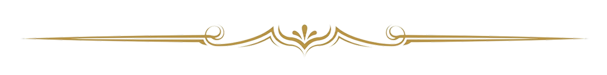
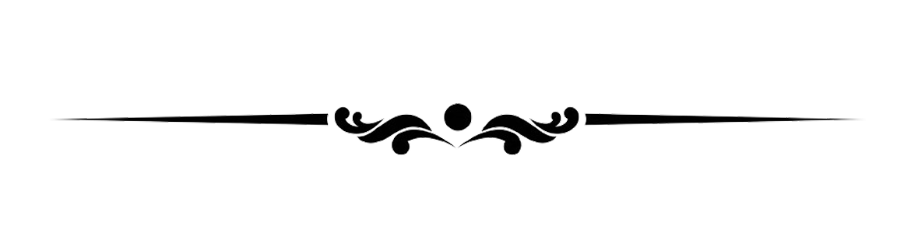
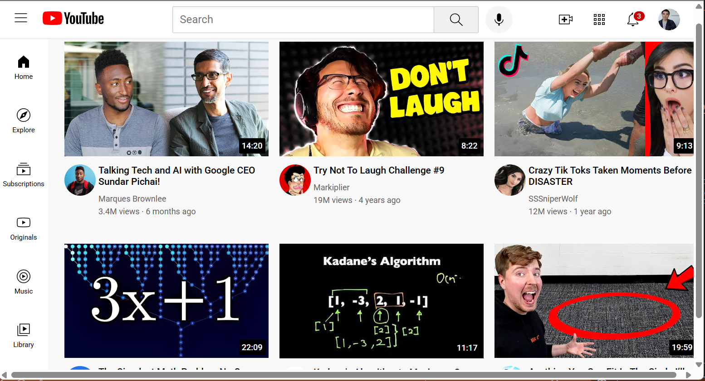
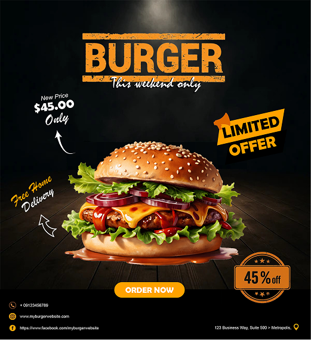
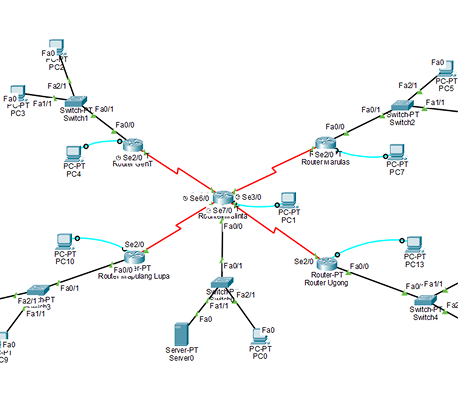

Hi, I am


I'm a Information Technology student developing expertise across software development and visual design. I work with tools like Java, Spring Boot, Python, and JavaScript on the engineering side, then Figma and Adobe Photoshop for design — driven by a belief that great products are both technically sound and beautifully crafted.


HIGHLIGHTS

Scrap Book Prototype
UI/UX · Figma
A high-fidelity Figma prototype with a glassmorphism aesthetic, designed as a digital journal documenting my journey through development and design — blending creative vision with personal reflection.

House of Origami
Web Design · HTML & CSS
A multi-page HTML and CSS web interface combining educational content with modern design, using a clean layout, grid-based lessons, and custom styling for clear navigation and a consistent brand identity.

Static Youtube Clone
HTML · CSS
A simple YouTube homepage clone created with HTML and CSS, focusing on layout replication using grid, positioning, and modern styling techniques. This project recreates the interface design without interactive functionality.

Business Card Design
Adobe Photoshop
A modern business card design created in Adobe Photoshop using a gold and navy color palette, featuring geometric elements and a clean layout to present professional contact information.

Burger Promotional Flyer
Adobe Photoshop
A food promotional flyer designed in Adobe Photoshop using dark backgrounds and warm amber tones to highlight a limited-time offer, focusing on strong visual hierarchy and an effective call to action.

ValAce Branches Simulation
Networking · Cisco Packet Tracer
A Cisco Packet Tracer network simulation of the ValAce branches using a hub-and-spoke topology centered at the Malinta main office. The project demonstrates WAN connectivity between multiple branch LANs using routers and switches.